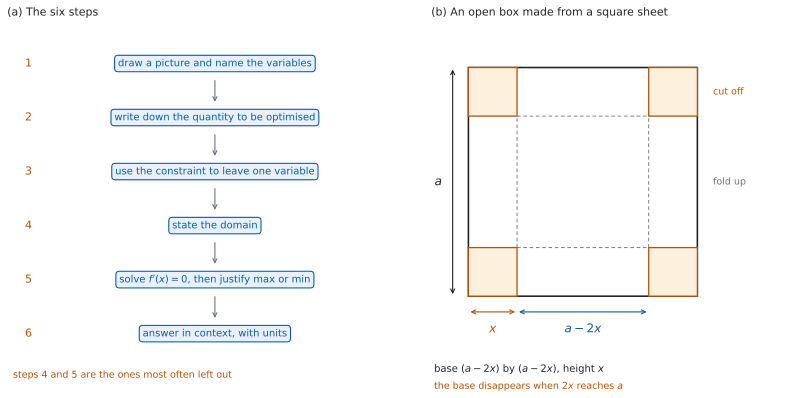

SL 5.8b — Optimization（最適化）
- 文章から、最大（最小）にしたい量を式で書ける。
- constraint（制約条件）を使って、変数を \(1\) つに減らせる。
- domain（定義域）を、問題の意味に合うように決められる。
- 微分して \(f'(x) = 0\) を解き、極大か極小かを示せる。
- 答えを、聞かれた量と単位で書ける。
- 意味のない解を、理由をつけて捨てられる。
The idea
1. 最適化とは
optimization（最適化）は、ある量をいちばん大きく（小さく）する場面を求めることです。
面積、体積、費用、利益などが題材になります。やることは SL 5.8a と同じで、極大・極小を求めるだけです。 ちがうのは、式が問題文からは直接与えられないところです。
式を自分で作るところが、この項目の中心です。
2. 手順
次の \(6\) 歩で進めます（図 1 (a)）。
| 歩 | すること | 抜けやすいところ |
|---|---|---|
| \(1\) | 図をかき、文字を決める | 文字が何を表すかを書かない |
| \(2\) | 最大（最小）にしたい量を式で書く | ちがう量の式を書いてしまう |
| \(3\) | 制約条件を使って、変数を \(1\) つにする | \(2\) 変数のまま微分する |
| \(4\) | 定義域を書く | まったく書かない |
| \(5\) | \(f'(x) = 0\) を解き、極大か極小かを示す | 判定を書かない |
| \(6\) | 聞かれた量を、単位をつけて答える | \(x\) で止める |
\(4\) 歩目と \(5\) 歩目が、いちばん抜けやすいところです。
3. 制約条件で変数を \(1\) つにする
文章には、たいてい \(2\) つの文が入っています。
| 文の役目 | 例 |
|---|---|
| 最大（最小）にしたい量 | 「面積を最大にしたい」 |
| constraint（制約条件） | 「まわりの長さは \(40\) m」 |
制約条件を式にして、片方の文字をもう片方で表します。 それを \(2\) 歩目の式に入れると、変数が \(1\) つになります。
変数が \(2\) つのままでは微分できません。 SL 5.6a までの規則は、すべて \(1\) 変数の関数についてのものです。
4. domain（定義域）を決める
長さや個数は、負にはなりません。 \(x > 0\) のように、意味から決まる範囲があります。
上にも制限が付くことがあります。 正方形の板から箱を作るなら、切り取る長さは板の半分より小さくなければなりません（図 1 (b)）。
定義域の外に出た解は、理由をつけて捨ててください。 「\(x = 9\) は \(0 < x < 7\) に入らないので、この場面には合いません」のように書きます。
答案に定義域を書くと、捨てた理由が説明できます。
5. 極大・極小であることを示す
\(f'(x) = 0\) を解いただけでは、まだ終わりません。 SL 5.8a の判定が要ります。
| 使うもの | 書き方 |
|---|---|
| \(f''\) | \(f''(a) < 0\) なので極大 |
| \(f'\) の符号 | \(a\) の左で \(f' > 0\)、右で \(f' < 0\) なので極大 |
どちらか \(1\) つを、必ず答案に書いてください。 「最大だから」と書くだけでは、示したことになりません。
\(f''(a) = 0\) になったときは、\(f'\) の符号のほうを使います。 \(f''\) による判定は、そのとき何も決めてくれません（SL 5.8a）。
関数の値を左右で \(1\) つずつ調べるのは、検算であって判定ではありません。 \(2\) 点の値がわかっても、そのあいだで何が起きているかは決まりません。答案に書くのは、\(f''\) の値か、\(f'\) の符号です。
6. 文脈にもどして答える
聞かれた量を答えてください。 「面積を最大にする \(x\)」を聞かれたのか、「最大の面積」を聞かれたのかで、答えがちがいます。
単位をつけてください。 長さなら cm、面積なら cm\(^{2}\)、体積なら cm\(^{3}\)、金額ならその通貨です。
\(2\) つ以上の長さを聞かれたら、全部出してください。 \(x\) を求めたあと、制約条件を使ってもう片方を出します。
7. よく出る形
| 場面 | 制約条件 | 最大（最小）にする量 |
|---|---|---|
| 長方形の囲い | まわりの長さ | 面積 |
| 長方形の囲い | 面積 | まわりの長さ |
| 正方形の板から箱 | 板の \(1\) 辺 | 体積 |
| ふたのない箱 | 体積 | 表面積 |
| 商品の値段 | 売れる個数の式 | 利益 |
体積を固定して「表面積を最小に」する形では、\(\dfrac{k}{x}\) の項が出ることが多いです。 微分は SL 5.3 の負の指数です。
Paper 1 では、手で解ける数になっています。このページの例題と演習も、すべて手で解ける形です。
Paper 2 では、電卓で最大・最小を出してもかまいませんが、式を作るところと定義域は自分で書きます。
グラフ画面に \(y = f(x)\) をかき、求めた点の位置が合っているかを目で確かめます。
定義域の外を見ていないか、いっしょに確かめてください。 グラフは定義域の外にも続いてしまいます。

Why it works
なぜ、変数を \(1\) つにするのでしょうか。 微分は \(1\) 変数の関数についての道具だからです。
\(A = xy\) のままでは、\(x\) を動かしたときに \(y\) もどう動くかが決まりません。制約条件は、その動き方を決めてくれます。 \(y\) を \(x\) で書きなおせば、\(A\) は \(x\) だけの関数になり、微分できます。
なぜ、定義域が要るのでしょうか。 式は、場面より広い範囲で意味をもってしまうからです。
\(A = x(14 - x)\) は \(x = 20\) でも計算できますが、そのとき「もう片方の辺」は \(-6\) になります。式は数を返しますが、場面としてはありえません。 だから、はじめに範囲を決めておきます。
なぜ、極大・極小の判定が要るのでしょうか。 \(f'(x) = 0\) は、極大でも極小でも、傾き \(0\) の変曲点でも起こるからです（SL 5.8a）。
「文章題だから最大に決まっている」とは言えません。 同じ式が、別の場面では最小を聞いていることもあります。判定を書けば、どちらであっても正しく答えられます。
なぜ、\(\dfrac{k}{x}\) の形がよく出るのでしょうか。 固定された量から求めた文字を、面積の式でもう一度かけ算するからです。
半径 \(r\) の円柱で体積が \(V\) に決まっていれば、高さは \(\dfrac{V}{\pi r^{2}}\) です。側面積はこれに \(2\pi r\) をかけた \(\dfrac{2V}{r}\) になります。\(r^{2}\) が \(1\) つ約分されるので、分母が \(r^{2}\) ではなく \(r\) になります。
Worked examples
問題文は英語です。意味が理解できなかったら、問題文の下の「日本語訳」を開いてください。解説は日本語です。
この項目は Paper 1 でも Paper 2 でも出ます。 ここでは電卓なしで解ける形にしてあります。
例題 1 A rectangle has a perimeter of \(40\) m. Find the largest possible area of the rectangle.
日本語訳
ある長方形のまわりの長さは \(40\) m です。この長方形の面積として考えられる最大の値を求めなさい。
\(1\) 歩目。 \(2\) 辺を \(x\) m と \(y\) m とします。
\(2\) 歩目。 最大にしたい量は面積です。
\[ A = xy \]
\(3\) 歩目。 制約条件は \(2x + 2y = 40\)、つまり \(y = 20 - x\) です。
\[ A = x(20 - x) = 20x - x^{2} \]
\(4\) 歩目。 \(x\) も \(y\) も正なので、定義域は \(0 < x < 20\) です。
\(5\) 歩目。 微分します。
\[ \frac{dA}{dx} = 20 - 2x = 0 \quad \Rightarrow \quad x = 10 \]
\[ \frac{d^{2}A}{dx^{2}} = -2 < 0 \]
\(\dfrac{d^{2}A}{dx^{2}}\) が負なので、\(x = 10\) で極大です。
\(6\) 歩目。 聞かれているのは面積です。
\[ A = 10 \times 10 = 100 \]
最大の面積は \(100\) m\(^{2}\) です。
検算（定義域）。 \(10\) は \(0 < x < 20\) の中にあります ✓
検算（両側の値で）。 \(A(9) = 9 \times 11 = 99\)、\(A(11) = 11 \times 9 = 99\) ✓ どちらも \(100\) より小さくなっています。
検算（形）。 \(y = 20 - 10 = 10\) なので、正方形になっています ✓ まわりの長さが決まった長方形では、正方形の面積がいちばん大きくなります。
検算（単位）。 長さが m なので、面積は m\(^{2}\) です ✓
\[2x + 2y = 40 \quad \Rightarrow \quad y = 20 - x\] \[A = x(20 - x) = 20x - x^{2}, \qquad 0 < x < 20\] \[\frac{dA}{dx} = 20 - 2x = 0 \quad \Rightarrow \quad x = 10\] \[\frac{d^{2}A}{dx^{2}} = -2 < 0 \quad \text{(maximum)}\] \[A = 100 \text{ m}^{2}\]
例題 2 An open box is made from a square sheet of card of side \(24\) cm by cutting a square of side \(x\) cm from each corner and folding up the sides. Find the value of \(x\) that gives the largest volume, and find that volume.
日本語訳
\(1\) 辺 \(24\) cm の正方形の厚紙の四隅から \(1\) 辺 \(x\) cm の正方形を切り取り、辺を折り上げて、ふたのない箱を作ります。体積が最大になる \(x\) の値と、そのときの体積を求めなさい。
\(1\) 歩目から \(3\) 歩目まで。 制約条件は「板の \(1\) 辺が \(24\) cm」です。四隅から \(x\) cm ずつ切るので、底面は \(1\) 辺 \((24 - 2x)\) cm、高さは \(x\) cm になります（図 1 (b)）。この時点で、変数は \(x\) だけになっています。
\[ V = x(24 - 2x)^{2} \]
\(4\) 歩目。 切り取れるのは \(x > 0\) で、底面が残るには \(24 - 2x > 0\) が要ります。定義域は \(0 < x < 12\) です。
\(5\) 歩目。 積の微分法と連鎖律を使います（SL 5.6b）。
\[ \frac{dV}{dx} = (24 - 2x)^{2} + x \times 2(24 - 2x) \times (-2) \]
\((24 - 2x)\) でくくります。
\[ \frac{dV}{dx} = (24 - 2x)\bigl[(24 - 2x) - 4x\bigr] = (24 - 2x)(24 - 6x) \]
\[ \frac{dV}{dx} = 0 \quad \Rightarrow \quad x = 12 \quad \text{or} \quad x = 4 \]
\(x = 12\) は定義域の外なので捨てます。 そのとき底面の \(1\) 辺が \(0\) になり、箱ができません。
\(x = 3\) では \(\dfrac{dV}{dx} = 18 \times 6 = 108 > 0\)、\(x = 5\) では \(\dfrac{dV}{dx} = 14 \times (-6) = -84 < 0\) です。正から負に変わるので、\(x = 4\) で極大です。
\(6\) 歩目。
\[ V = 4 \times 16^{2} = 1024 \]
\(x = 4\) のとき、体積は \(1024\) cm\(^{3}\) です。
検算（定義域）。 \(4\) は \(0 < x < 12\) の中、\(12\) は外です ✓
検算（両側の値で）。 \(V(3) = 3 \times 18^{2} = 972\)、\(V(5) = 5 \times 14^{2} = 980\) ✓ どちらも \(1024\) より小さくなっています。
検算（別の道で）。 先に \(V = x(24-2x)^{2} = 4x^{3} - 96x^{2} + 576x\) と展開してから微分すると \(12x^{2} - 192x + 576\) です。\((24 - 2x)(24 - 6x)\) を展開しても \(12x^{2} - 192x + 576\) ✓ 別の道で同じ式になりました。
検算（単位）。 長さが cm なので、体積は cm\(^{3}\) です ✓
\[V = x(24 - 2x)^{2}, \qquad 0 < x < 12\] \[\frac{dV}{dx} = (24 - 2x)(24 - 6x) = 0 \quad \Rightarrow \quad x = 4 \text{ or } x = 12\] \(x = 12\) is outside the domain, so it is rejected \[\frac{dV}{dx} > 0 \text{ at } x = 3, \qquad \frac{dV}{dx} < 0 \text{ at } x = 5 \quad \text{(maximum)}\] \[x = 4, \qquad V = 1024 \text{ cm}^{3}\]
例題 3 A company sells \(x\) items each week. Its weekly profit, in dollars, is given by \(P(x) = 60x - x^{2} - 500\). Find the number of items that gives the largest weekly profit, and find that profit.
日本語訳
ある会社は毎週 \(x\) 個の商品を売ります。\(1\) 週間の利益（ドル）は \(P(x) = 60x - x^{2} - 500\) で与えられます。利益が最大になる個数と、そのときの利益を求めなさい。
\(2\) 歩目。 式はもう与えられています。制約条件を使う必要はありません。
\(4\) 歩目。 個数なので \(x \geq 0\) です。個数はほんとうは整数ですが、微分するために、いったん \(x\) を連続な量として扱います。 求めた \(x\) が整数でなければ、その前後の整数で \(P\) を計算してくらべます。
\(5\) 歩目。
\[ P'(x) = 60 - 2x = 0 \quad \Rightarrow \quad x = 30 \]
\[ P''(x) = -2 < 0 \]
\(P''\) が負なので、\(x = 30\) で極大です。
\(6\) 歩目。
\[ P(30) = 1800 - 900 - 500 = 400 \]
週に \(30\) 個売るとき、利益は \(400\) ドルで最大になります。
検算（両側の値で）。 \(P(29) = 1740 - 841 - 500 = 399\)、\(P(31) = 1860 - 961 - 500 = 399\) ✓ どちらも \(400\) より小さくなっています。
検算（個数）。 \(30\) は整数です ✓ 個数なので、整数でないと場面に合いません。
検算（利益が負になる範囲）。 \(P(0) = -500 < 0\) です ✓ \(1\) つも売らなければ赤字なので、\(-500\) は固定費だとわかります。
検算（単位）。 答えは個数と金額です ✓ 個数に単位はつけず、利益にはドルをつけます。
\[P(x) = 60x - x^{2} - 500, \qquad x \geq 0\] \[P'(x) = 60 - 2x = 0 \quad \Rightarrow \quad x = 30\] \[P''(x) = -2 < 0 \quad \text{(maximum)}\] \[x = 30 \text{ items}, \qquad P = 400 \text{ dollars}\]
例題 4 An open box (a box with no lid) has a square base of side \(x\) cm and a volume of \(500\) cm\(^{3}\).
(a) Show that the surface area of the box, in cm\(^{2}\), is \(S = x^{2} + \dfrac{2000}{x}\).
(b) Find the value of \(x\) that minimises \(S\). Justify that your value gives a minimum.
日本語訳
ふたのない箱の底面は \(1\) 辺 \(x\) cm の正方形で、体積は \(500\) cm\(^{3}\) です。
(a) この箱の表面積（cm\(^{2}\)）が \(S = x^{2} + \dfrac{2000}{x}\) であることを示しなさい。
(b) \(S\) を最小にする \(x\) の値を求め、その値で最小になることを説明しなさい。
(a) 高さを \(h\) cm とします。体積の条件から
\[ x^{2}h = 500 \quad \Rightarrow \quad h = \frac{500}{x^{2}} \]
ふたがないので、正方形の底面が \(1\) つ、長方形の側面が \(4\) つです。
\[ S = x^{2} + 4xh = x^{2} + 4x \times \frac{500}{x^{2}} = x^{2} + \frac{2000}{x} \]
(b) \(\dfrac{2000}{x} = 2000x^{-1}\) と見て微分します（SL 5.3）。
\[ \frac{dS}{dx} = 2x - 2000x^{-2} = 0 \]
\[ 2x = \frac{2000}{x^{2}} \quad \Rightarrow \quad x^{3} = 1000 \quad \Rightarrow \quad x = 10 \]
\[ \frac{d^{2}S}{dx^{2}} = 2 + 4000x^{-3} \]
\(x > 0\) では \(\dfrac{d^{2}S}{dx^{2}} > 0\) なので、\(x = 10\) で極小です。
検算（定義域）。 \(x > 0\) です ✓ 長さなので負にはなりません。
検算（値）。 \(S(10) = 100 + 200 = 300\) ✓
検算（両側の値で）。 \(S(8) = 64 + 250 = 314\)、\(S(20) = 400 + 100 = 500\) ✓ どちらも \(300\) より大きくなっています。
検算（高さ）。 \(h = \dfrac{500}{100} = 5\) ✓ 底面 \(10 \times 10\)、高さ \(5\) で、体積は \(500\) にもどります。
試験ではこう書く
For an open box, \(S = x^{2} + 4xh\) with \(x^{2}h = 500\), so \(S = x^{2} + \dfrac{2000}{x}\). Then \(\dfrac{dS}{dx} = 2x - \dfrac{2000}{x^{2}} = 0\) gives \(x^{3} = 1000\), so \(x = 10\). Also \(\dfrac{d^{2}S}{dx^{2}} = 2 + \dfrac{4000}{x^{3}}\), which is positive for every \(x > 0\). A positive second derivative at a stationary point means a minimum, so \(x = 10\) minimises \(S\).
（ふたのない箱では \(S = x^{2} + 4xh\) で、\(x^{2}h = 500\) だから \(S = x^{2} + \dfrac{2000}{x}\) になる。微分して \(x = 10\) を得る。第 \(2\) 次導関数は \(x > 0\) でつねに正なので、停留点は極小である、という意味です。）
(a) \[x^{2}h = 500 \quad \Rightarrow \quad h = \frac{500}{x^{2}}\] \[S = x^{2} + 4xh = x^{2} + \frac{2000}{x} \quad \text{(open box)}\]
(b) \[\frac{dS}{dx} = 2x - \frac{2000}{x^{2}} = 0 \quad \Rightarrow \quad x^{3} = 1000 \quad \Rightarrow \quad x = 10\] \[\frac{d^{2}S}{dx^{2}} = 2 + \frac{4000}{x^{3}} > 0 \text{ for } x > 0 \quad \text{(minimum)}\] \[x = 10\]
Common errors
意味から決まる範囲を、はじめに書いてください（第 4 節）。捨てる解の理由になります。
\(f'(x) = 0\) を解いただけでは足りません（第 5 節）。\(f''\) か、\(f'\) の符号を書きます。
制約条件で \(1\) つに減らしてから微分します（第 3 節）。
\(x\) が半分の長さなのか、全体の長さなのかを、図に書きこんで確かめます（第 2 節）。
「最大の面積」を聞かれていたら、\(x\) ではなく面積を、cm\(^{2}\) をつけて書きます（第 6 節）。
定義域の外の解は、理由をつけて捨てます（第 4 節）。
Exercises
各問題に、折りたたみが \(3\) つ付いています。日本語訳、解答例（答案用紙に書くべきこと。英語です。英語の答案例が付くものもあります）、解説（なぜそうなるか。日本語です）。
まず自分で解いて、次に解答例と見くらべてください。解説は、合わなかったときだけ開けば十分です。
1 A rectangle has a perimeter of \(60\) cm. Find the largest possible area of the rectangle.
日本語訳
ある長方形のまわりの長さは \(60\) cm です。この長方形の面積として考えられる最大の値を求めなさい。
\[2x + 2y = 60 \quad \Rightarrow \quad y = 30 - x\]
\[A = x(30 - x), \qquad 0 < x < 30\]
\[\frac{dA}{dx} = 30 - 2x = 0 \quad \Rightarrow \quad x = 15\]
\[\frac{d^{2}A}{dx^{2}} = -2 < 0 \quad \text{(maximum)}\]
\[A = 225 \text{ cm}^{2}\]
まわりの長さを式にして、\(y\) を \(x\) で表します（第 3 節）。
検算（両側の値で）。 \(A(14) = 14 \times 16 = 224\)、\(A(16) = 16 \times 14 = 224\) ✓ どちらも \(225\) より小さくなっています。
検算（形）。 \(y = 15\) なので正方形です ✓
検算（単位）。 長さが cm なので、面積は cm\(^{2}\) です ✓
2 A rectangle has an area of \(36\) cm\(^{2}\). Find the smallest possible perimeter of the rectangle.
日本語訳
ある長方形の面積は \(36\) cm\(^{2}\) です。この長方形のまわりの長さとして考えられる最小の値を求めなさい。
\[xy = 36 \quad \Rightarrow \quad y = \frac{36}{x}\]
\[P = 2x + \frac{72}{x}, \qquad x > 0\]
\[\frac{dP}{dx} = 2 - \frac{72}{x^{2}} = 0 \quad \Rightarrow \quad x^{2} = 36 \quad \Rightarrow \quad x = 6\]
\[\frac{d^{2}P}{dx^{2}} = \frac{144}{x^{3}} > 0 \text{ for } x > 0 \quad \text{(minimum)}\]
\[P = 24 \text{ cm}\]
3 A closed box has a square base of side \(x\) cm and a total surface area of \(150\) cm\(^{2}\).
(a) Show that the volume of the box, in cm\(^{3}\), is \(V = \dfrac{75x - x^{3}}{2}\).
(b) Find the value of \(x\) that gives the largest volume.
日本語訳
ふたのある箱の底面は \(1\) 辺 \(x\) cm の正方形で、表面積の合計は \(150\) cm\(^{2}\) です。
(a) この箱の体積（cm\(^{3}\)）が \(V = \dfrac{75x - x^{3}}{2}\) であることを示しなさい。
(b) 体積が最大になる \(x\) の値を求めなさい。
(a) \[2x^{2} + 4xh = 150 \quad \Rightarrow \quad h = \frac{150 - 2x^{2}}{4x}\]
\[V = x^{2}h = \frac{x(150 - 2x^{2})}{4} = \frac{75x - x^{3}}{2}\]
(b) \[\frac{dV}{dx} = \frac{75 - 3x^{2}}{2} = 0 \quad \Rightarrow \quad x^{2} = 25 \quad \Rightarrow \quad x = 5\]
\[\frac{d^{2}V}{dx^{2}} = -3x < 0 \text{ for } x > 0 \quad \text{(maximum)}\]
\[x = 5\]
ふたがあるので、正方形の面が \(2\) つ、長方形の側面が \(4\) つです。表面積が制約条件で、体積を最大にします（第 7 節）。
検算（\(x = -5\) は）。 \(x^{2} = 25\) の解は \(\pm 5\) ですが、長さなので \(-5\) は捨てます ✓
検算（高さ）。 \(h = \dfrac{150 - 50}{20} = 5\) ✓ 底面 \(5 \times 5\)、高さ \(5\) の立方体になります。表面積は \(6 \times 25 = 150\) にもどります。
検算（両側の値で）。 \(V(4) = \dfrac{300 - 64}{2} = 118\)、\(V(6) = \dfrac{450 - 216}{2} = 117\) ✓ どちらも \(V(5) = 125\) より小さくなっています。
4 A shop sells a toy for \(p\) dollars each. At this price it sells \(60 - 2p\) toys each day. The shop also has daily running costs of \(100\) dollars.
(a) Show that the daily profit, in dollars, is \(P = 60p - 2p^{2} - 100\).
(b) Find the price that gives the largest daily profit, and find that profit.
日本語訳
ある店はおもちゃを \(1\) 個 \(p\) ドルで売っています。この値段のとき、\(1\) 日に \(60 - 2p\) 個売れます。また、\(1\) 日の運営費は \(100\) ドルです。
(a) \(1\) 日の利益（ドル）が \(P = 60p - 2p^{2} - 100\) であることを示しなさい。
(b) \(1\) 日の利益が最大になる値段と、そのときの利益を求めなさい。
(a) \[P = p(60 - 2p) - 100 = 60p - 2p^{2} - 100, \qquad 0 < p < 30\]
(b) \[\frac{dP}{dp} = 60 - 4p = 0 \quad \Rightarrow \quad p = 15\]
\[\frac{d^{2}P}{dp^{2}} = -4 < 0 \quad \text{(maximum)}\]
\[P = 900 - 450 - 100 = 350\]
the price is \(15\) dollars and the largest daily profit is \(350\) dollars
売上は「値段 × 売れる個数」です。そこから運営費を引くと利益になります（第 7 節）。
検算（定義域）。 売れる個数 \(60 - 2p\) は正でなければならないので \(p < 30\) です ✓ 値段も正なので \(0 < p < 30\) です。
検算（両側の値で）。 \(P(14) = 840 - 392 - 100 = 348\)、\(P(16) = 960 - 512 - 100 = 348\) ✓ どちらも \(350\) より小さくなっています。
検算（売れる個数）。 \(p = 15\) のとき \(60 - 30 = 30\) 個売れます ✓ 売上は \(15 \times 30 = 450\) ドル、そこから \(100\) を引いて \(350\) ドルです。
5 A farmer has \(200\) m of fencing. He uses it to make three sides of a rectangular field; the fourth side is an existing straight wall. Find the largest possible area of the field.
日本語訳
ある農家は \(200\) m の柵をもっています。長方形の畑の \(3\) 辺をこの柵で作り、残りの \(1\) 辺はもとからあるまっすぐな壁を使います。この畑の面積として考えられる最大の値を求めなさい。
\[2x + y = 200 \quad \Rightarrow \quad y = 200 - 2x\]
\[A = x(200 - 2x), \qquad 0 < x < 100\]
\[\frac{dA}{dx} = 200 - 4x = 0 \quad \Rightarrow \quad x = 50\]
\[\frac{d^{2}A}{dx^{2}} = -4 < 0 \quad \text{(maximum)}\]
\[A = 5000 \text{ m}^{2}\]
柵は \(3\) 辺だけなので、制約条件は \(2x + y = 200\) です（第 3 節）。
検算（両側の値で）。 \(A(49) = 49 \times 102 = 4998\)、\(A(51) = 51 \times 98 = 4998\) ✓
検算（形）。 \(y = 200 - 100 = 100\) なので、壁に沿った辺が \(2\) 倍の長さです ✓ 正方形ではありません。
検算（柵の長さ）。 \(2 \times 50 + 100 = 200\) ✓ 制約条件にもどります。
6 An open box is made from a square sheet of card of side \(10\) cm by cutting a square of side \(x\) cm from each corner and folding up the sides. Its volume, in cm\(^{3}\), is \(V = x(10 - 2x)^{2}\). Explain why this model is only valid for \(0 < x < 5\).
日本語訳
\(1\) 辺 \(10\) cm の正方形の厚紙の四隅から \(1\) 辺 \(x\) cm の正方形を切り取り、辺を折り上げて、ふたのない箱を作ります。その体積（cm\(^{3}\)）は \(V = x(10 - 2x)^{2}\) です。このモデルが \(0 < x < 5\) でしか使えない理由を説明しなさい。
\(x\) is a length that is cut off, so \(x > 0\)
the base has side \(10 - 2x\), which must be positive, so \(x < 5\)
定義域は、場面の意味から決まります（第 4 節）。
検算（端で）。 \(x = 5\) なら底面の \(1\) 辺が \(0\)、\(x = 0\) なら高さが \(0\) です ✓ どちらも箱になりません。
検算（外で）。 \(x = 6\) を入れると \(V = 6 \times 4 = 24\) と正の数が出ます ✓ 式は計算できても、場面としてはありえません。
検算（式の形）。 \((10 - 2x)^{2}\) は \(2\) 乗なので、\(x > 5\) でも正のままです ✓ 式だけでは、範囲の外だと気づけません。
試験ではこう書く
The quantity \(x\) is the side of the square cut from each corner, so it must be a positive length: \(x > 0\). The base of the box has side \(10 - 2x\), and a side length must also be positive, so \(10 - 2x > 0\), giving \(x < 5\). Together these give \(0 < x < 5\). Outside this interval the formula still gives a number, but no box can be made.
7 A rectangle has a perimeter of \(48\) cm. To find the largest possible area, a student writes \(A = x(24 - x)\), where \(x\) cm is one side, and then \(\dfrac{dA}{dx} = 24 - 2x = 0\), so \(x = 12\). The student stops there. Describe what else the student must do to complete the answer.
日本語訳
ある長方形のまわりの長さは \(48\) cm です。面積の最大値を求めるために、ある生徒は \(1\) 辺を \(x\) cm として \(A = x(24 - x)\) と書き、\(\dfrac{dA}{dx} = 24 - 2x = 0\) から \(x = 12\) を得て、そこで止めました。答えを完成させるために、この生徒があとやるべきことを述べなさい。
justify that \(x = 12\) gives a maximum, for example by showing \(\dfrac{d^{2}A}{dx^{2}} = -2 < 0\)
state the domain \(0 < x < 24\)
answer the question asked: the area, \(A = 144\) cm\(^{2}\), not the value of \(x\)
\(5\) 歩目と \(6\) 歩目が抜けています（第 2 節）。
検算（面積の値）。 \(A = 12 \times 12 = 144\) ✓
検算（判定）。 \(\dfrac{d^{2}A}{dx^{2}} = -2 < 0\) なので極大です ✓
検算（何が聞かれたか）。 聞かれたのは面積で、\(x\) ではありません ✓
試験ではこう書く
The student must justify that \(x = 12\) gives a maximum, for example by finding \(\dfrac{d^{2}A}{dx^{2}} = -2\), which is negative. The domain should also be stated: both sides are positive lengths, so \(0 < x < 24\). Finally the question asks for the area, not for \(x\), so the student must substitute to get \(A = 12 \times 12 = 144\) and give the answer with units.
8 The cost, in dollars, of running a machine for \(x\) hours is \(C(x) = 3x + \dfrac{1200}{x}\), for \(x > 0\). Find the value of \(x\) that minimises the cost. Justify that your value gives a minimum.
日本語訳
ある機械を \(x\) 時間動かす費用（ドル）は \(C(x) = 3x + \dfrac{1200}{x}\)（\(x > 0\)）です。費用を最小にする \(x\) の値を求め、その値で最小になることを説明しなさい。
\[C'(x) = 3 - \frac{1200}{x^{2}} = 0 \quad \Rightarrow \quad x^{2} = 400 \quad \Rightarrow \quad x = 20\]
\[C''(x) = \frac{2400}{x^{3}} > 0 \text{ for } x > 0 \quad \text{(minimum)}\]
\[x = 20 \text{ hours}\]
\(\dfrac{1200}{x} = 1200x^{-1}\) と見て微分します（SL 5.3）。
検算（\(x = -20\) は）。 \(x^{2} = 400\) の解は \(\pm 20\) ですが、\(x > 0\) なので \(-20\) は捨てます ✓
検算（値）。 \(C(20) = 60 + 60 = 120\) ✓
検算（両側の値で）。 \(C(10) = 30 + 120 = 150\)、\(C(40) = 120 + 30 = 150\) ✓ どちらも \(120\) より大きくなっています。
試験ではこう書く
Differentiating gives \(C'(x) = 3 - \dfrac{1200}{x^{2}}\). Setting this equal to zero gives \(x^{2} = 400\), so \(x = 20\) (the value \(x = -20\) is rejected because \(x > 0\)). Differentiating again gives \(C''(x) = \dfrac{2400}{x^{3}}\), which is positive for every \(x > 0\). A positive second derivative at a stationary point means a minimum, so the cost is least when \(x = 20\).
9 A rectangle has its base on the \(x\)-axis and its two upper vertices on the curve \(y = 12 - x^{2}\). The rectangle is symmetrical about the \(y\)-axis, so its upper vertices are \((-x,\ 12 - x^{2})\) and \((x,\ 12 - x^{2})\), where \(x > 0\). Find the largest possible area of the rectangle.
日本語訳
ある長方形は、底辺が \(x\) 軸上にあり、上の \(2\) つの頂点が曲線 \(y = 12 - x^{2}\) の上にあります。この長方形は \(y\) 軸について対称で、上の \(2\) 頂点は \((-x,\ 12 - x^{2})\) と \((x,\ 12 - x^{2})\)（\(x > 0\)）です。この長方形の面積として考えられる最大の値を求めなさい。
\[A = 2x(12 - x^{2}) = 24x - 2x^{3}, \qquad 0 < x < 2\sqrt{3}\]
\[\frac{dA}{dx} = 24 - 6x^{2} = 0 \quad \Rightarrow \quad x^{2} = 4 \quad \Rightarrow \quad x = 2\]
\[\frac{d^{2}A}{dx^{2}} = -12x < 0 \text{ for } x > 0 \quad \text{(maximum)}\]
\[A = 32\]
幅は \(2x\)、高さは \(12 - x^{2}\) です。\(y\) 軸について対称なので、幅が \(2\) 倍になります（第 2 節）。
検算（座標で）。 \(x = 2\) のとき、頂点は \((-2, 0)\)、\((2, 0)\)、\((-2, 8)\)、\((2, 8)\) です ✓ 幅 \(4\)、高さ \(8\) で、面積は \(32\) になります。
検算（値）。 \(A = 2 \times 2 \times 8 = 32\) ✓
検算（両側の値で）。 \(A(1) = 2 \times 11 = 22\)、\(A(3) = 6 \times 3 = 18\) ✓ どちらも \(32\) より小さくなっています。
10 A cylinder has radius \(r\) cm and height \(h\) cm, where \(r + h = 12\).
(a) Show that its volume, in cm\(^{3}\), is \(V = \pi r^{2}(12 - r)\).
(b) Find the value of \(r\) that gives the largest volume.
日本語訳
ある円柱の半径は \(r\) cm、高さは \(h\) cm で、\(r + h = 12\) です。
(a) 体積（cm\(^{3}\)）が \(V = \pi r^{2}(12 - r)\) であることを示しなさい。
(b) 体積が最大になる \(r\) の値を求めなさい。
(a) \[h = 12 - r\]
\[V = \pi r^{2}h = \pi r^{2}(12 - r) = 12\pi r^{2} - \pi r^{3}, \qquad 0 < r < 12\]
(b) \[\frac{dV}{dr} = 24\pi r - 3\pi r^{2} = 3\pi r(8 - r) = 0 \quad \Rightarrow \quad r = 0 \text{ or } r = 8\]
\(r = 0\) is outside the domain, so it is rejected
\[\frac{d^{2}V}{dr^{2}} = 24\pi - 6\pi r, \qquad \frac{d^{2}V}{dr^{2}} = -24\pi < 0 \text{ at } r = 8 \quad \text{(maximum)}\]
\[r = 8 \text{ cm}\]
円柱の体積は \(\pi r^{2}h\) です。制約条件から \(h\) を \(r\) で表します（第 3 節）。
検算（\(r = 0\) も解か）。 \(3\pi r(8 - r) = 0\) の解は \(r = 0\) と \(r = 8\) ですが、\(r = 0\) は定義域の外です ✓
検算（高さ）。 \(h = 12 - 8 = 4\) ✓ 制約条件にもどります。
検算（体積）。 \(V(8) = \pi \times 64 \times 4 = 256\pi\) ✓
検算（両側の値で）。 \(V(7) = 49\pi \times 5 = 245\pi\)、\(V(9) = 81\pi \times 3 = 243\pi\) ✓ どちらも \(256\pi\) より小さくなっています。